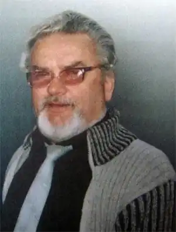

Бабій Степан Олександрович народився 28 березня 1940 року в селі Голибісах Шумського району Тернопільської області. Закінчив медичне училище, курс філологічного факультету Львівського університету, Тернопільський медичний інститут.
Працював лікарем в селі Хотин Радивилівського і в селі Олександрія Рівненського районів на Рівненщині. 3 1986 до 1990 року був на творчій роботі. 3 1990 до 1998 року на державній службі – заввідділом культури в м. Рівному і заступником голови райдержадміністрації Здолбунівського району. З 2000 р. по 2005 р. очолював Рівненську обласну організацію Національної спілки письменників України.
Степан Бабій є автором низки поетичних збірок, прози і публіцистики. Співавтор і ведучий трьох телефільмів про Т. Г. Шевченка, телефільмів "Одержима" (про Лесю Українку) і "Гурби". Автор чотирьох десятків книг (збірок поезій, повістей), багатьох публіцистичних статей. Поетичні збірки: "Журавлиний невід", "Відкриваю себе", "Пізні яблука", "Потривожені птахи", "Із вирію літ", "Ріка у відблиску очей", "Україна під сатаною", "Це інший світ", "У холодному блиску комет", "Такий день", "Вертаючий з небес", "Нічні спалахи", "Приречені сніги". Проза: "Криниця на пагорбах", "Плата за любов. Прокляття волхвів". Публіцистика: "Волинські дзвони", "Луни повстанського краю", "На хвилі, на часі" та інших. Лауреат обласних літературних премій імені В. Поліщука (1985), імені Світочів (2016) просвітянської премії імені Григорія Чубая (2000).